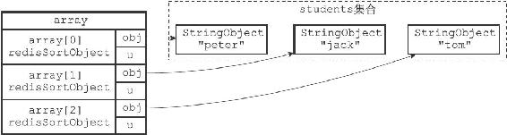
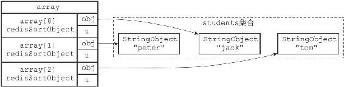

21.7 GET选项的实现
在默认情况下，SORT命令在对键进行排序之后，总是返回被排序键本身所包含的元素。
比如说，在以下这个对students集合进行排序的例子中，SORT命令返回的就是被排序之后的students集合的元素：
redis> SADD students "peter" "jack" "tom"
(integer) 3
redis> SORT students ALPHA
1) "jack"
2) "peter"
3) "tom"
但是，通过使用GET选项，我们可以让SORT命令在对键进行排序之后，根据被排序的元素，以及GET选项所指定的模式，查找并返回某些键的值。
比如说，在以下这个例子中，SORT命令首先对students集合进行排序，然后根据排序结果中的元素（学生的简称），查找并返回这些学生的全名：
#
设置peter
、jack
、tom
的全名
redis> SET peter-name "Peter White"
OK
redis> SET jack-name "Jack Snow"
OK
redis> SET tom-name "Tom Smith"
OK
# SORT
命令首先对students
集合进行排序，得到排序结果
# 1) "jack"
# 2) "peter"
# 3) "tom"
#
然后根据这些结果，获取并返回键jack-name
、peter-name
和tom-name
的值
redis> SORT students ALPHA GET *-name
1) "Jack Snow"
2) "Peter White"
3) "Tom Smith"
服务器执行SORT students ALPHA GET*-name命令的详细步骤如下：
1）创建一个redisSortObject结构数组，数组的长度等于students集合的大小。
2）遍历数组，将各个数组项的obj指针分别指向students集合的各个元素，如图21-17所示。
3）根据obj指针所指向的集合元素，对数组进行字符串排序，排序后的数组如图21-18所示：
·被排序到数组索引0位置的是"jack"元素。
·被排序到数组索引1位置的是"peter"元素。
·被排序到数组索引2位置的是"tom"元素。
4）遍历数组，根据数组项obj指针所指向的集合元素，以及GET选项所给定的*-name模式，查找相应的键：
·对于"jack"元素和*-name模式，查找程序返回键jack-name。
·对于"peter"元素和*-name模式，查找程序返回键peter-name。
·对于"tom"元素和*-name模式，查找程序返回键tom-name。

图21-17 排序之前的数组

图21-18 排序之后的数组
5）遍历查找程序返回的三个键，并向客户端返回它们的值：
·首先返回的是jack-name键的值"Jack Snow"。
·然后返回的是peter-name键的值"Peter White"。
·最后返回的是tom-name键的值"Tom Smith"。
因为一个SORT命令可以带有多个GET选项，所以随着GET选项的增多，命令要执行的查找操作也会增多。
举个例子，以下SORT命令对students集合进行了排序，并通过两个GET选项来获取被排序元素（一个学生）所对应的全名和出生日期：
#
为学生设置出生日期
redis> SET peter-birth 1995-6-7
OK
redis> SET tom-birth 1995-8-16
OK
redis> SET jack-birth 1995-5-24
OK
#
排序students
集合，并获取相应的全名和出生日期
redis> SORT students ALPHA GET *-name GET *-birth
1) "Jack Snow"
2) "1995-5-24"
3) "Peter White"
4) "1995-6-7"
5) "Tom Smith"
6) "1995-8-16"
服务器执行SORT students ALPHA GET*-name GET*-birth命令的前三个步骤，和执行SORT students ALPHA GET*-name命令时的前三个步骤相同，但从第四步开始有所区别：
4）遍历数组，根据数组项obj指针所指向的集合元素，以及两个GET选项所给定的*-name模式和*-birth模式，查找相应的键：
·对于"jack"元素和*-name模式，查找程序返回jack-name键。
·对于"jack"元素和*-birth模式，查找程序返回jack-birth键。
·对于"peter"元素和*-name模式，查找程序返回peter-name键。
·对于"peter"元素和*-birth模式，查找程序返回peter-birth键。
·对于"tom"元素和*-name模式，查找程序返回tom-name键。
·对于"tom"元素和*-birth模式，查找程序返回tom-birth键。
5）遍历查找程序返回的六个键，并向客户端返回它们的值：
·首先返回jack-name键的值"Jack Snow"。
·其次返回jack-birth键的值"1995-5-24"。
·之后返回peter-name键的值"Peter White"。
·再之后返回peter-birth键的值"1995-6-7"。
·然后返回tom-name键的值"Tom Smith"。
·最后返回tom-birth键的值"1995-8-16"。
SORT命令在执行其他带有GET选项的排序操作时，执行的步骤也和这里给出的步骤类似。